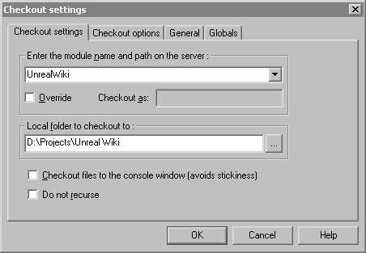
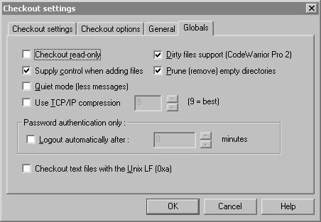
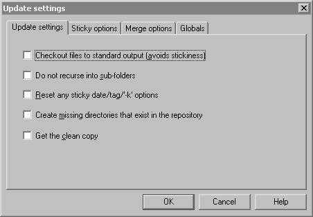
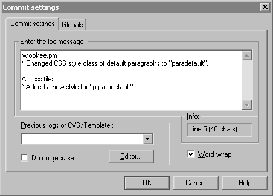

CVS/Wiki
The Unreal Wiki's scripts and styles (and various other files, like the user interface graphics) are maintained in a CVS repository. Send an email to mychaeel@beyondunreal.com if you feel you'd like to have access to this repository (with a short explanation why, if it's not evident).
A more general introduction to CVS is available on, well, CVS.
Getting Started
Head over to CVS, select a CVS client of your choice for your operating system and install it. I'll be explaining the steps using [WinCvs], but generally they're always the same.
First thing you'll have to do after this is checking out the files from the repository. You'll only have to do this once; see "Updating" below for how to get the latest versions of the files later. Select Create → Checkout module, and you'll be presented with the following dialog box.
|

|
After that, click the General tab.
|
Then click the Globals tab.
|

|
Make sure you're connected to the Internet and click OK. The client will then connect to the CVS server and download all files, copying them to your harddisk at the location you specified. Congrats! There they are.
Mychaeel: Somewhere in the process you'll have to enter your password... can't remember exactly where though, I'm afraid. I'll use tarquin to find out. 
Tarquin: I'm not sure either. I'm in the process of getting Wikipedia's code. I had to do Menu → Admin → Login... to give a password, but that was after an unsuccessful attempt, which meant CVS picked up where I was trying to log into (the login dialog has only a field for the password. So if you do that first, how does it know where to send it?).
Updating
To get the latest versions of the files in your work directory after you initially checked them out, you'll have to update your working copy.
For that, select the directory or the file (or multiple files) you want to update in WinCvs's browser. Select Modify → Update selection and you'll be presented with this dialog box.
Note that updating a file doesn't discard or overwrite any changes you made on it. Changes that were committed since you updated the last time will be merged with your local copy – after that process you'll have a file that contains your own changes and the changes other people made and committed to the repository. If a change you made collides with another one of another person, you'll get an edit conflict and will be warned by the client. Then you'll have to manually go through the affected file and sort everything out before you can commit your own changes. |

|
If you just want to see what was changed without actually updating anything, select Query → Query update and watch WinCvs's log window. It'll give you the same information it gives you when actually updating, but it'll keep your files (and the repository's files) untouched.
Committing Changes
You can edit your local copy at will. When you've changed something you want to put back in the repository, you'll have to commit your changes.
Before you commit, always update (see above). If you're lucky, CVS will refuse to work if you made any changes that conflict with other changes that were committed by other people since you made your last update. If you're less lucky, the client will hang or crash.
To do that, select the files you have changed in WinCvs's browser and select Modify → Commit selection. A dialog box pops up that asks you to enter a log message.
Click OK and the client will upload your changes to the CVS server. |

|
Questions?
This is Wiki. Add them here.
Tarquin: Any particular reason why all the files in my CVS directory are read-only?
Mychaeel: There's a "Checkout read-only" option in the "General" tab of the dialog box that appears when checking out files. Do you have that enabled? (I thought it was disabled by default; if it's not, I'll have to add that to the description above.)
Tarquin: It was checked by default.
Tarquin: Fixed. I changed their status from windows ... I'll see what happens next time I check out files. I've committed changes BTW. woohoo!
Tarquin: Next question: how does CVS decide if the next version number after 1.3 is 1.4 or 1.3.1 ?
Mychaeel: That must be manually specified when committing a file; otherwise CVS will happily continue incrementing the version number following the dot. I don't see yet how that would work with WinCvs though. The other parts of the number initially displayed as 1.1.1.1 are related to branching; see [this page] for more info.
Tarquin: I see. I thought something like 1.3.1 was for a small change, which my last update was. I think we can live without branching... 
Mychaeel: Well, actually there's a benefit of regarding all sorts of changes the same by unanimously incrementing the last partial version number – you're relieved from the duty of (reproducibly) judging whether a change is a "small" or a "large" one. For that matter, all changes committed to the repository should be "small" ones, at least and definitely in terms of the amount of text necessary to describe them in the log. (Where "Fixed typo" would have the same subjective size as "Implemented world formula.")